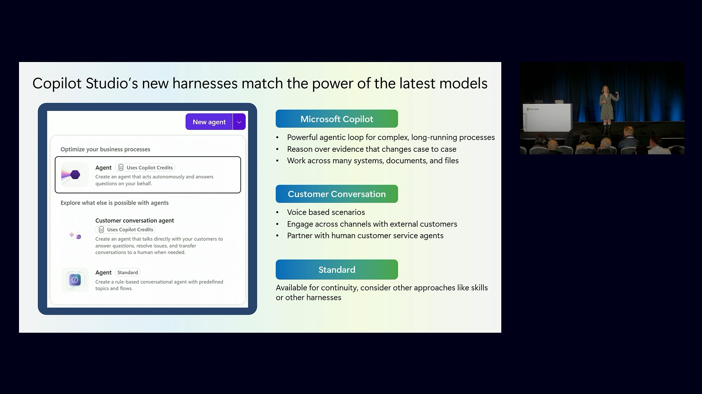
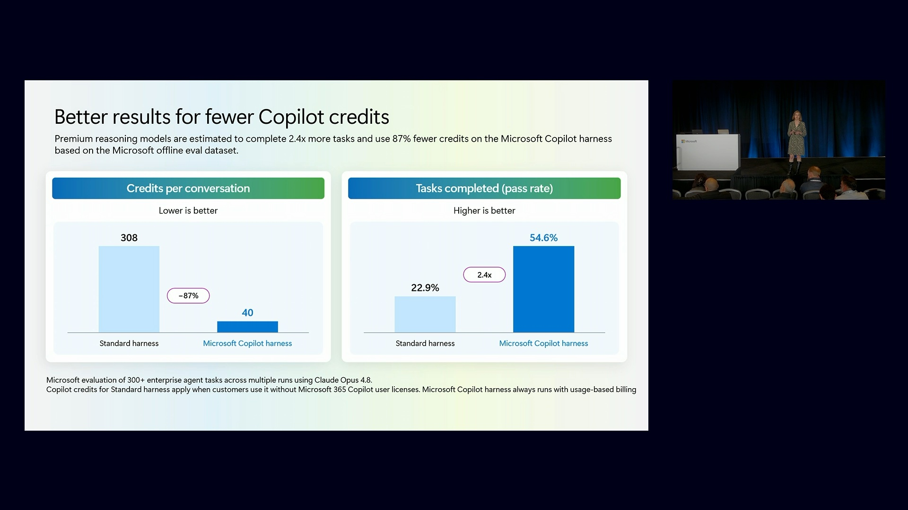
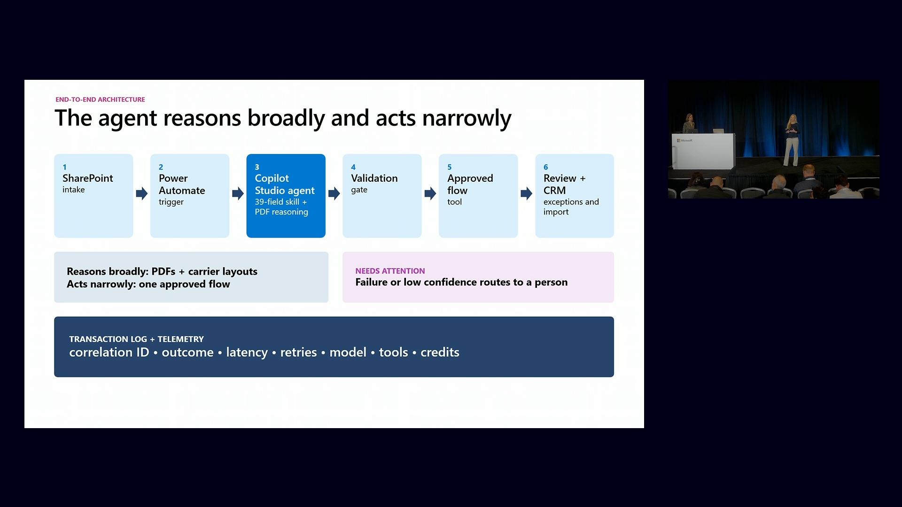
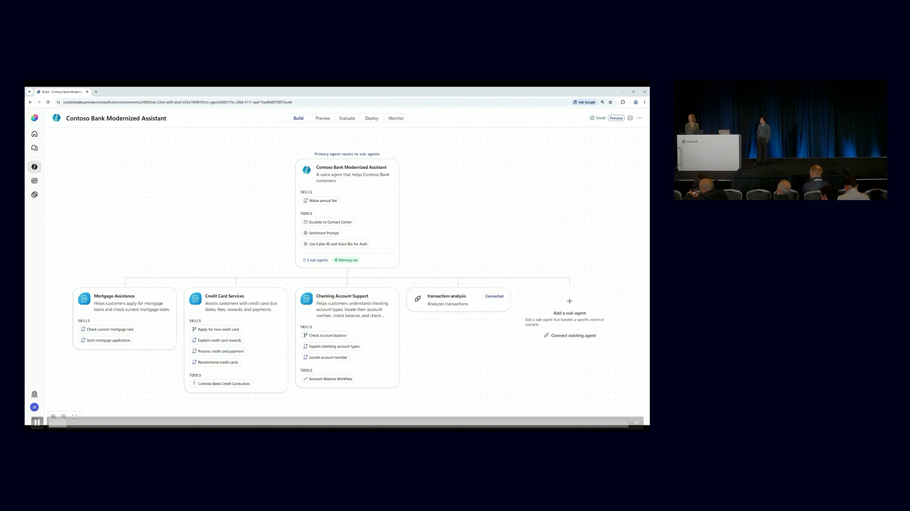

长周期跨系统自主推理首选
基于 Microsoft Copilot 软件开发工具包与每会话专属 Azure 隔离容器构建，提供命令行与本地磁盘文件系统，擅长处理逐案变化的异构证据与多系统协同，统一采用按用量消耗点数计费 [1][2]。
在 Microsoft Ignite 2026 专场 BRK264 中，Copilot Studio 产品负责人 Alice Appleton、NFP 应用工程副总裁 Jennifer Ratten 与微软产品经理 Jason Xian 给出了清晰的底座选型框架：新建智能体应按业务复杂度、响应延迟、交互渠道与成本结构，在长程推理型 Microsoft Copilot 底座与实时全渠道型客户对话底座之间匹配分工，而非沿用 2023 年面向单轮问答设计的标准底座 [1][2]。在 300 余项企业任务的 Claude Opus 4.8 离线评测中，切换至 Microsoft Copilot 底座将任务完成率从 22.9% 拉升至 54.6%（2.4 倍），并将单次会话消耗压降 87%（从 308 点数降至 40 点数）；而面向外部语音与在线客服的场景，则由新近正式商用的客户对话底座与联络中心智能接管毫秒级应答与声纹核身 [1][2]。
01 / Act 01: Landscape & Token Economics
企业落地人工智能的价值通常归入三大支柱：面向个人日常办公提效的随身助手（如 Copilot 与 Cowork）、面向对外售卖软件研发的编码底座（如 GitHub Copilot），以及面向市场、人事、客服等跨部门可重复业务流程的编排平台 [1]。Copilot Studio 正是锚定第三支柱的核心载体 [1]。回顾底层架构演进，2022 年 11 月对话式大模型兴起后，微软于 2023 年推出了第一代标准底座（Standard Harness）：它刻意把用户请求切碎为窄小的单步提示词依次喂给模型，既便于单轮限流防守，又能掩盖早期模型能力参差不齐的短板 [1][2]。然而在 2024 年 12 月推理模型问世、2025 年底工具内嵌长程规划循环普及之后，当年“不让模型看见完整任务全貌”的保护性约束，反而锁死了新一代推理模型的上限 [1][2]。为此，Copilot Studio 现已在新建向导中并列提供三套目标鲜明的执行底座 [1][2]：
基于 Microsoft Copilot 软件开发工具包与每会话专属 Azure 隔离容器构建，提供命令行与本地磁盘文件系统，擅长处理逐案变化的异构证据与多系统协同，统一采用按用量消耗点数计费 [1][2]。
原生内建实时低延迟语音模型与多语种音色，在单一画布内混编多子智能体、生成式技能与确定性主题，直连电话热线、官网微件与人工坐席转接 [1][2]。
继续支持绑定坐席许可或按量计费的存量规则型对话机器人；对于新立项智能体，官方明确建议优先选用前两款现代底座以获取更高业务回报 [1][2]。
下方交互导览台汇总了 BRK264 全场 44 分 42 秒官方点播流、原版讲义下载入口及四幕核心实录时间轴 [1]：
点击封面可在页内直接挂载微软 Medius 官方点播流，或切换四幕标签检视三底座评测、投顾穿透演示、NFP 医保实战与客户对话底座时间点。
针对许多按量付费客户担心“多步自主循环更烧钱”的顾虑，Alice Appleton 披露了三组硬核离线评测账本 [1][2]。首先在统一运行 Claude Sonnet 4.6 的业务邮件与流程评测集中，Microsoft Copilot 底座在四大维度全面胜出：知识问答从 66.0% 升至 86.4%（+20.4 个百分点），代码分析从 40.6% 跃升至 88.1%（+47.5 个百分点）；文件分析从 63.5% 升至 91.7%（+28.2 个百分点），多工具调用从 87.0% 升至 98.9%（+11.9 个百分点），同时单任务输入词元反而从 47.8K 降至 26.5K（净省 45%）[1][2]。其次在“究竟什么推动通过率”的归因对照中，停留在标准底座上单纯更换更强模型，通过率仅微动 0.2 个百分点（67.0% 至 67.2%）；而保持同一批任务与模型直接切换至新底座，OpenAI 模型通过率净涨 10.8 个百分点（达 78.0%），Anthropic 模型更飙升 22.1 个百分点（达 89.1%）[1][2]。
这种“干活更多却花钱更少”的反直觉现象，源于提示词缓存架构的代际差异 [1][3]。新底座每轮会话发起的模型调用次数接近标准底座的两倍（OpenAI 为 4.3 次对比 2.6 次，约 1.7 倍；Anthropic 为 4.8 次对比 2.3 次，约 2 倍），但增量上下文拼接让提示词缓存命中率从 45% 跃升至 83%（OpenAI，+38.6 个百分点）、从 39% 跃升至 88%（Anthropic，+48.2 个百分点），使折算缓存权重后的净输入词元成本再降 15%–21%（OpenAI 由 29.5K 降至 18.2K，Anthropic 由 37.2K 降至 15.6K）[1][3]。折算为真实的客户账单：在涵盖 300 余项企业任务的 Claude Opus 4.8 多轮评测中，新底座将任务完成率从 22.9% 推高至 54.6%（2.4 倍），单次会话消耗的 Copilot 点数则从 308 点骤降至 40 点，降幅高达 87% [1][2]：

顶部置顶 Microsoft Copilot 底座与客户对话底座，底部保留标准底座服务存量延续需求 [1][2]。

在同用旗舰推理模型 Claude Opus 4.8 时，单次会话点数由 308 降至 40，彻底打消按量迁移顾虑 [1][2]。
02 / Act 02: Financial Insights Live Demo
在第二幕实机演示中，Alice Appleton 扮演财富管理机构 Northwind Traders 的理财顾问，展示了如何在 Microsoft Copilot 底座上用“非确定性模型判断 + 确定性审批工作流”组装生产级 Financial Insights Agent v8 [1]。与旧时代动辄编写数页死板操作步骤提示词的做法不同，新底座的智能体指令只交代业务目标与核心纪律：市场行情仅允许引用经过核验的晨星（Morningstar）实时数据源，严禁抓取公开网页传言；行文保持中立分析并提供对比表格与时间戳链接 [1]。模型栏直接开启 Auto 自动选模，无需人工干预即可随前沿新模型上线平滑获益 [1]。
为了避免无关规范长期挤占上下文窗口，团队将公司品牌邮件排版要求封装为独立的 Markdown 技能（Skill：northwind-traders-email-template），智能体仅在真正起草邮件的那一轮才将其按需调入上下文 [1]。外部动作层共挂载晨星模型上下文协议服务（Morningstar MCP Server）、顾问个人资料查询、客户持仓读取，以及一条名为 Send Client Email with Approval 的确定性审批工作流（新版设计器支持上下或左右拓扑切换）——确保任何发往客户的调仓提醒都必须先经顾问本人点击批准方可发出，同时外挂《Northwind 投资理念》文档供循环按需检索 [1]。
当提交开放式评估请求后，智能体针对任职于微软的客户账户 LAMBERT233（投资组合总市值 1,942,933.72**）展开了超越字面指令的深度核查 [1]： @@BILINGUAL_SEP@@ Given an open-ended portfolio review prompt for Microsoft-employed client @@CODE_6@@ (**1,942,933.72 total portfolio value), the agent reasoned beyond literal instructions [1]:
03 / Act 03: NFP Customer Production Case
第三幕由保险经纪、员工福利与财富管理机构 NFP（业务横跨美国、加拿大、英国与爱尔兰）应用工程副总裁 Jennifer Ratten 登台分享真实规模化经验 [1]。NFP 自 2025 年起开展全员面对面实训并普及 Copilot Studio 创作者许可，内部智能体数量呈复利式增长；但当新底座与按用量计费模式推出时，面对数千名创作者可能全选高价模型、挂载大量外部服务并触发自主重试的“最坏推演”，团队一度面临因担忧账单失控而停滞观望的风险 [1]。NFP 的破局之道是用限时实测遥测取代主观空想：在固定时间切片内真实采集新旧底座的运行轨迹、模型选择与点数变化，将模糊焦虑转化为可量化的治理仪表盘，使治理机制成为加速交付的护航器而非审批路障 [1]。
在核心生产场景中，NFP 落地了联邦医疗保险（Medicare）与个人健康险申请单处理智能体 [1]。每逢年度开放投保高峰期，分布在 4 个联邦大区的一线业务员每天上传海量投保申请 PDF，涵盖 20 余种承保商版式（含手写扫描件与机打表格，各区域目录规范各异）[1][2]。过去团队完全依赖人工逐份打开 PDF、核验并重复敲入 39 个客户关系管理（CRM）字段，真正的产能瓶颈并非业务需求不足，而是沉重的手工重录负荷 [1][2]。Jennifer 将该系统的成功浓缩为一句工程准则：“广域推理，窄域行动（Reasons broadly, acts narrowly）” [1][2]：
四大区域业务员按各自习惯将保单 PDF 放入对应 SharePoint 目录，由 Power Automate 触发器以无头（Headless）事件驱动方式唤醒智能体 [1][2]。
无需为 20 多家承保商分别编写条件分支流，智能体加载统一的 39 字段结构化提取技能，自适应识别手写字迹、异构版式与区域口径差异 [1][2]。
对提取结果执行严格的字段置信度与完整性核验；低置信度或异常条目自动分流至业务专员复核，实现“自动化重复劳动，保留人类专业判断” [1][2]。
校验通过的数据仅允许通过唯一受控工作流写入核心系统，并全量记录关联编号、结果、延迟、重试次数、模型、工具与消耗点数供审计调优 [1][2]。
04 / Act 04: Customer Conversation Harness & CCI
既然 Microsoft Copilot 底座如此强大，何时不应当用它构建智能体？微软产品经理 Jason Xian 在第四幕给出了明确边界：深度推理循环以任务完结质量为第一目标，并未针对外部客户通话所需的毫秒级超低延迟与实时双向语音交互做专门优化 [1]。当你构建部署在企业官网、400/800 客服电话号码、交互式语音应答（IVR）或 Teams Phone 上直接面向外部消费者的智能体时，应当选择上月发布并于大会当日正式全面商用（GA，覆盖美、欧、澳、英、加、亚、瑞士及阿联酋，后续扩展至政府云 GCC）的 客户对话底座（Customer Conversation Harness） [1][2]。
该底座并非在文本机器人外临时拼接语音插件，而是将实时潜空间语音模型（Real-time Latent Speech Models）原生融于内核：创作者不仅能按语种配置丰富音色（如现场分享的意大利语口语陪练），还能精细调节响应延迟阈值与拾音灵敏度，从容过滤环境背景噪音或捕捉轻声细语，并跨来电回拨持久保留历史对话记忆 [1]。在单画布多智能体编排界面中，自然语言描述即可一键生成如同真实客服班组般协同的专职子智能体（每个子智能体独立拥有专属工具、指令、知识库与技能），且同时兼容生成式技能、确定性工作流以及经典 Copilot Studio 主题（Classic MCS Topics） [1][2]。与此同时，同日正式商用的 Microsoft Contact Center Intelligence（CCI，联络中心智能） 让企业无需改动既有呼叫路由队列，仅粘贴客户端标识即可直连 Genesys、Avaya、Five9 与 Cisco 等主流联络中心，原生解锁来电声纹生物识别核身与后台逐通会话自动质检打分 [1][2]。

前端开放兼容 20+ 承保商 PDF 版式推理，后端收口至单一受控工作流落库并全量沉淀遥测日志 [1][2]。

主代理挂载声纹核身与人工转接工具，下辖房贷、信用卡与支票账户专员，混编生成式技能与确定性流 [1][2]。
在 Contoso Bank Modernized Assistant 双模态实机演示中，Jason 上传信用卡手册创建生成式推荐技能后直接发起免号码语音预览：智能体在询问年费偏好与贵宾厅需求后，自然流畅地推荐了年费 495**、附带 Sky Lounge 权益的 @@CODE_1@@ 信用卡；切回银行官网聊天微件输入申卡指令时，同一智能体立即调用确定性主题弹出富交互自适应卡片（Adaptive Card）；随后直接拨打绑定的客服电话查询支票账户余额，智能体基于来电号码与 Jason 本人声纹当场完成免密核身（若换旁边的 Alice 说话则会立即拒止），并触发受保护工作流准确播报账户余额 **68 [1]。下表浓缩了三大执行底座在全部关键选型维度上的实战对照，无论最终选定哪套底座，底层均共享同一套企业级应用生命周期管理（ALM）、数据最小权限治理、审计日志与点数成本管控 [1][2]：
| 选型评估维度 | Microsoft Copilot 底座 | 客户对话底座（GA） | 标准底座（延续支持） |
|---|---|---|---|
| 最佳适用场景 | 跨多系统、逐案多变证据的长周期复杂业务流程（如投顾穿透、20+ 版式保单入库）[1][2] | 面向外部客户的官网在线客服、电话热线、IVR 与人机协同联络中心 [1][2] | 已投产的规则分支型内部或轻量问答智能体资产平滑维护 [1][2] |
| 延迟与交互模态 | 侧重多轮深度规划、工具自愈与高完成率，支持对话及无头事件触发 [1][2] | 原生实时潜空间语音模型，主打毫秒级超低延迟双工对话与多音色抗噪 [1] | 单轮快速响应，受限于窄提示词拆分而缺乏全局多步推理视野 [1] |
| 编排与确定性抓手 | Copilot SDK 循环 + Azure 容器沙盒 + 模块化技能 + 确定性工作流 / 生命周期钩子 [1][4] | 单画布多子代理，混编生成式技能、工作流、跨通话记忆与经典 Topics [1][2] | 传统预定义主题（Topics）分支树与连接器动作编排 [1][2] |
| 身份与渠道扩展 | 企业委托身份、Work IQ、MCP 服务及动态任务子智能体（BRK259 深入展开）[1][4] | 直连网站、电话网、Teams Phone 及 Genesys/Avaya/Five9/Cisco（含声纹核身）[1][2] | Microsoft 365 内部渠道及常规网页/消息通道 [1] |
| 计费与经济模型 | 纯按用量消耗 Copilot 点数；高缓存命中（83%–88%）在 Opus 4.8 上较标准按量省 87% [1][2] | 按用量消耗 Copilot 点数（配备官方成本估算器辅助容量规划）[1] | 支持 M365 Copilot 员工坐席许可包含，或预购/按需消耗点数 [1][2] |
05 / References: Official Primary Sources & Related Sessions
840f0781-2aae-4992-a99e-1c0e984a71c0）与双语 WebVTT 演讲逐字稿（2026-11-18）